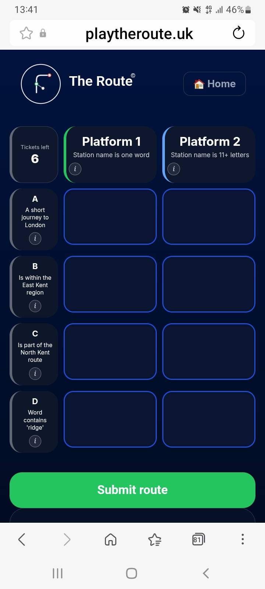
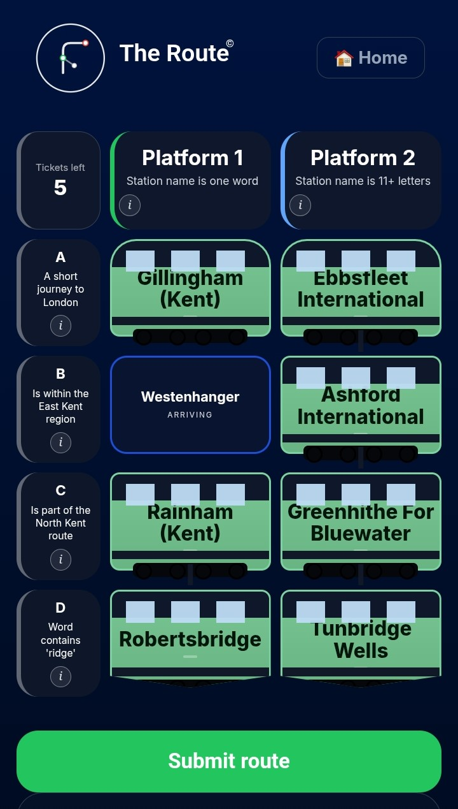
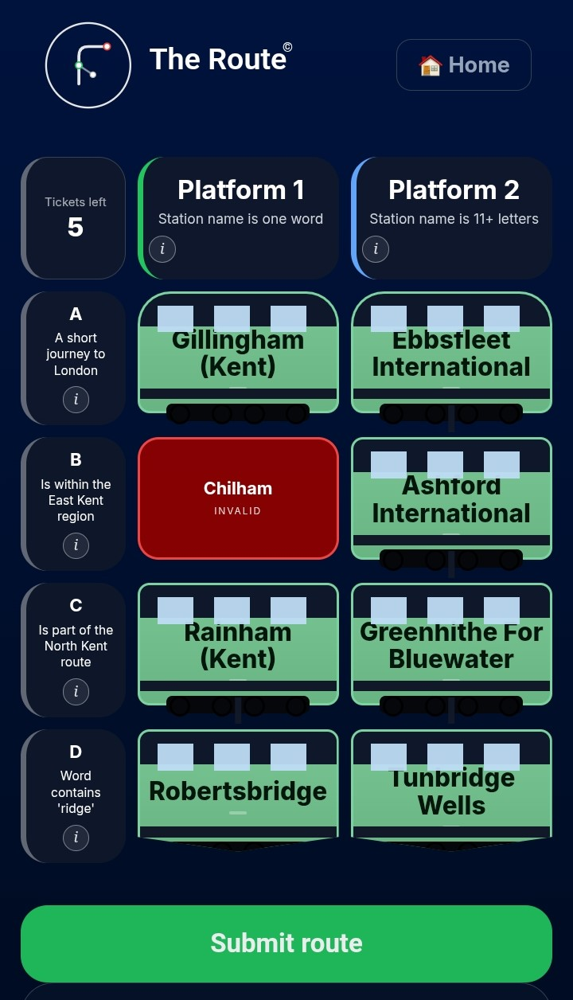
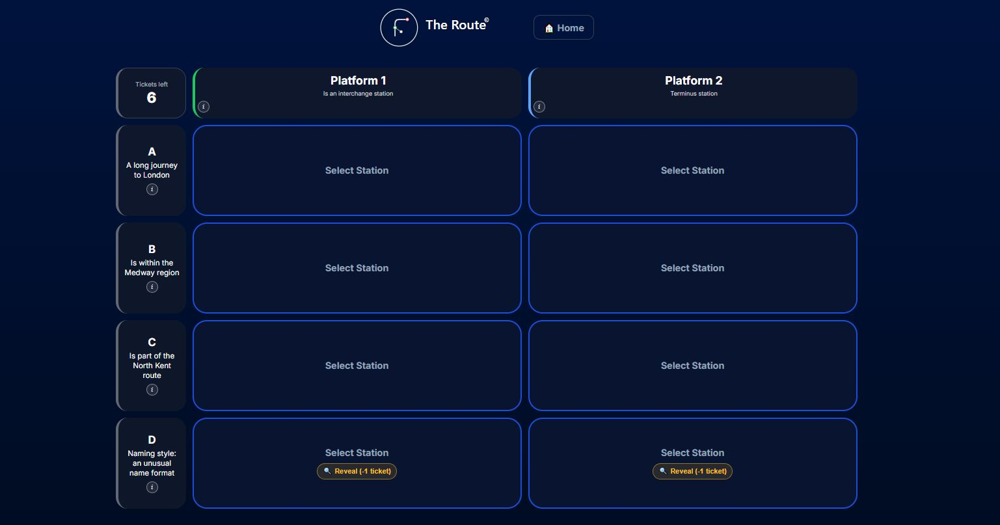
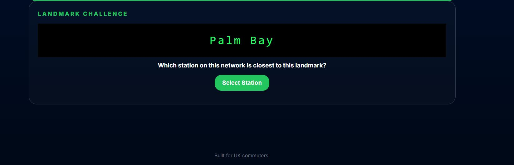
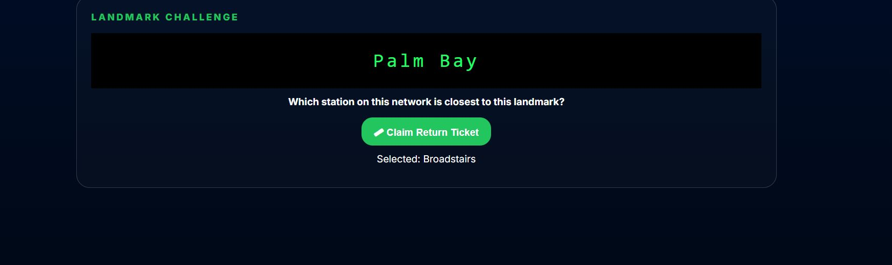
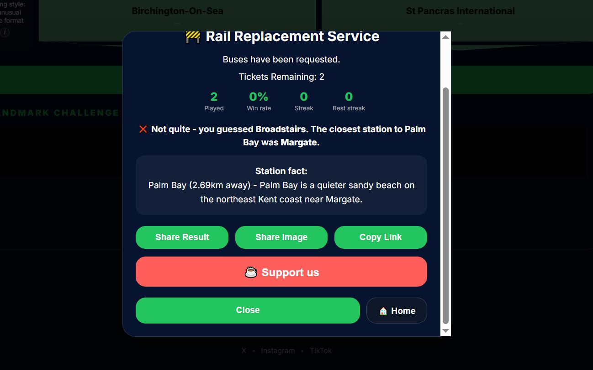

Rules
🎯 The Objective
Each day you'll be given a grid of eight stations.
Think of it as four station announcements across two platforms.
Your challenge is to work out what connects the stations, identify the missing pieces of the journey, and complete the route.
Some puzzles are based on geography. Others use journey times, station names, railway terminology, or quirks of the network. Every puzzle is different, but every solution follows a route.
Solve all eight announcements correctly and you'll unlock the Landmark Challenge bonus round.
🖼 Example Puzzle
Here's what a puzzle looks like from start to finish:
1. You start with an empty grid

Eight empty announcements, four clues down the side, two clues across the top.
2. Pick a station that fits both clues

A station shows as "ARRIVING" while you're choosing it, before it's checked.
3. Correct answers lock in green, wrong ones turn red

Here Chilham was wrong for this clue (red), while the rest of the row is correctly filled in (green).
How to read the puzzle
- Each row represents a platform.
- Each platform contains four station announcements.
- The clue on the left provides information about that platform's route.
- The clues above each column provide additional hints.
- Select stations that satisfy both the platform clue and the column clue.
- Correct answers appear in green.
- Incorrect answers appear in red.
- Complete all announcements to unlock the Landmark Challenge bonus round.
💡 A Tip for New Players
Don't try to solve the entire puzzle at once.
Start with the clue that seems easiest, place a station, and use that information to narrow down the remaining possibilities.
Every correct announcement brings you one stop closer to the destination.
🔍 Reveal Hints
Some clue combinations genuinely only have a handful of valid stations. Where that's the case, a small 🔍 Reveal (-1 ticket) button will appear on that announcement.
Tapping it spends one ticket and reveals the first letter of a real, valid answer for that clue - narrowing things down without simply handing you the solution. Each announcement can only be revealed once, and the option disappears once you've filled that spot correctly.

Announcements with very few possible answers show a Reveal option - here, both stops in row D.
🏆 The Landmark Challenge
Solve all eight announcements correctly and the Landmark Challenge unlocks - a bonus round for one final return ticket.
A real landmark from the network's area is revealed on the departure board. Your task: work out which station on this network sits closest to it.
You get one guess. Get it right and you earn a ticket back. Get it wrong and you lose one - either way, you'll be told the correct answer straight away, along with a fact about the landmark.
1. The landmark is revealed

Solving the board unlocks this bonus round and names a real landmark near the network.
2. Pick your station, then confirm

Tap "Select Station" to choose, then "Claim Return Ticket" to lock in your one guess.
3. Find out if you were right

Right or wrong, the correct station and a fact about the landmark are always shown.
🎟 Tickets
Tickets are your lives. Each incorrect station selection costs one ticket. Use all your tickets and the journey ends.
🎟 Standard Ticket
- 6 tickets
- No timer
- Take your time and enjoy the journey
⏱ Express Service
- Timed challenge mode
- Same puzzle
- Beat the clock before departure